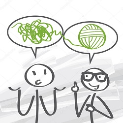

¿Alguna vez, te cuestionaste el modo en que te relacionas con el mundo?
PROPUESTA DE VALOR
Objetivos de la sesion:
Acompañar un proceso integrador desde una perspectiva sistemica y constructivista. Tomar conciencia de la importancia del Cuerpo-Emocion-Lenguaje y el dominio Energetico para nuestro transitar en la vida. Generar coherencia en nuestro accionar acoder al objetivo de la sesion. Desafiar el observador que somos. Sensibilizar y desarrollar el dominio energetico. Crear bienestar, serenidad y un estado emocional que sea funcional para el cumplimiento de los objetivos.
¿Que es el coaching ontologico?
Es una profesión comprometida con la expansión del potencial personal, organizacional y social. Coaching significa –entrenamiento- y viene del ámbito de los deportes, Ontológico significa – conocimiento del ser- deviene de la rama de la filosofía que estudia la naturaleza del ser. Se trata de una disciplina que aporta una manera diferente de interpretar a los seres humanos, su modo de relacionarse, de actuar y de alcanzar los objetivos que se proponen para sí mismos, para sus empresas y para la sociedad. En un proceso de Coaching Ontológico, el crecimiento ocurre en el dominio del “Ser”, a través de un aprendizaje que cuestiona con respeto los modos tradicionales de percibir e interpretar, donde las personas y los equipos desarticulan sus patrones de conducta y comportamiento habituales, para comenzar a operar con mayor creatividad, protagonismo y proactividad; generando competencias emocionales, del hacer, del pensar y de la comunicación.
EL ARTE DE BUSCAR LA MEJOR VERSION DE UNO MISMO
¿Que es una conversacion de coaching?
Es un estilo de conversación que prioriza la pregunta, la observación y reflexión, facilitando un proceso de aprendizaje ontológico, que desde el compromiso del coachee expanda su capacidad de acción y posibilite alcanzar los resultados deseados. Se desarrolla en un espacio de confidencialidad, confianza, aceptación y compromiso, donde el coachee/cliente manifiesta una inquietud a conversar.